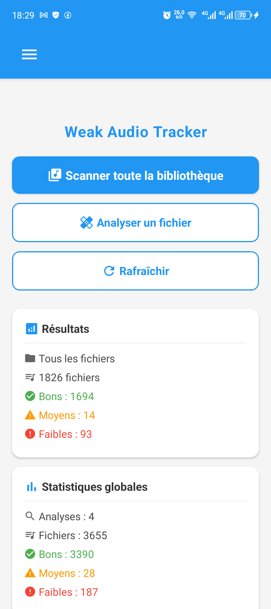
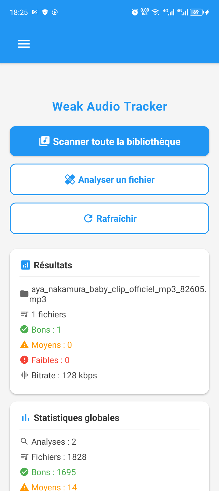
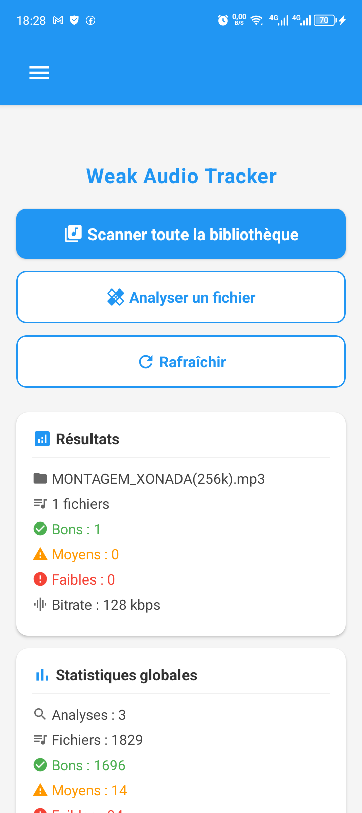
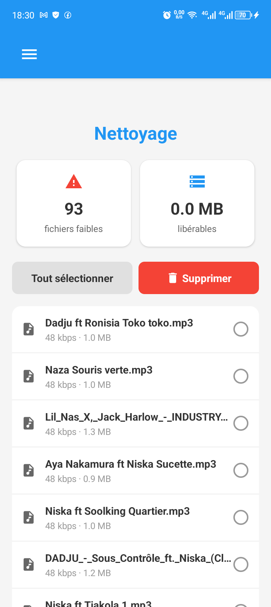
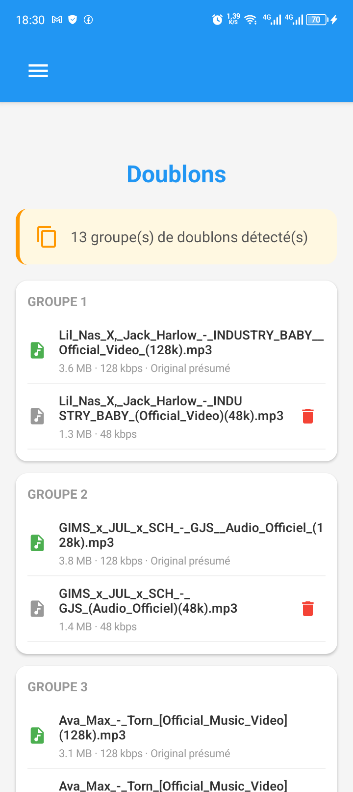

Fonctionnalités
Scan complet
Analyse tous vos fichiers audio. Support MP3, M4A, FLAC, WAV, OGG, AAC...
Classification
Bonne (≥128 kbps), moyenne (64-127), faible (<64 kbps)
Doublons
Détection par nom de fichier. Version avancée (empreinte audio) en V2.
Nettoyage
Supprime les fichiers faibles et les doublons en un clic
Statistiques
Graphiques, rapports HTML/CSV (PC) / Export logs (Android)
Confidentialité
Télémétrie anonyme optionnelle. Aucune donnée personnelle
Téléchargement
Android
APK · Android 10+ · ~115 Mo
Installation : Autoriser "Sources inconnues" (Paramètres → Sécurité → Sources inconnues)
Téléchargements Windows
0Téléchargements Android
0Captures d'écran
Windows

Onglet Analyse

Onglet Rapport

Onglet Nettoyage
Android

Scan complet

Analyse fichier

Résultat API (bitrate réel)

Nettoyage

Détection doublons
Guide rapide
Windows
Téléchargez et décompressez l'archive
Double-cliquez sur WeakAudioTracker.exe
Cliquez sur "Choisir un dossier"
L'analyse démarre automatiquement
Android
Téléchargez l'APK
Autorisez "Sources inconnues" (paramètres)
Ouvrez l'application
Lancez "Scanner toute la bibliothèque"
Confidentialité
Weak Audio Tracker peut collecter des données anonymes (OS, matériel, fonctionnalités utilisées, erreurs) uniquement avec votre consentement.
Aucune donnée personnelle : noms de fichiers, chemins d'accès, contenu audio, adresse IP, informations personnelles.
Vous pouvez refuser au premier démarrage ou modifier votre choix dans les paramètres (Support → Exporter les logs).